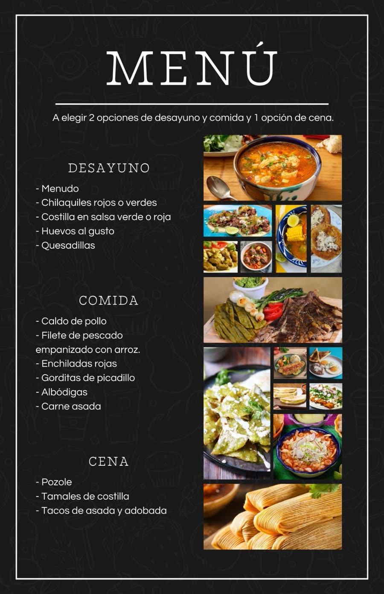

El lugar
La Vieja es un rancho agricultor y ganadero habitado por la familia Arrizón, ubicado en una zona montañosa de Mascota, Jalisco. Tiene clima frío la mayor parte del año, sobre todo en invierno, y está rodeado de un gran bosque de pino.
Destilando tradición…
Una inmersión en el rancho de la familia Arrizón: conoce el proceso de la raicilla, planta un agave y vive el campo.
Una inmersión en el rancho de la familia Arrizón: conoce el proceso de la raicilla, planta un agave y vive el campo.
La Vieja es un rancho agricultor y ganadero habitado por la familia Arrizón, ubicado en una zona montañosa de Mascota, Jalisco. Tiene clima frío la mayor parte del año, sobre todo en invierno, y está rodeado de un gran bosque de pino.
Una cabaña en el centro de la propiedad, con capacidad para 8 personas:
La comida la prepara la familia Arrizón: 3 comidas al día, desayuno, comida y cena. Los anfitriones ofrecen opciones; si el grupo prefiere elegir, el menú incluye:

Ver el menúPor la mañana, de 9:00 a 11:00 a.m., los visitantes pueden participar en la ordeña diaria de vacas y tomar pajaretes.
De 9:00 a 10:00 a.m. pueden participar haciendo una tortilla a mano como parte de la experiencia.
Para atenuar el frío: asar bombones o tener una buena plática alrededor del fuego.
Cata y maridaje de raicilla con degustación de ponches de sabores, impartida por Catadoras en Destilados Nacionales. El maridaje se realiza con chocolate, queso, cítricos u otros alimentos, no con platillos preparados.
El tour incluye un shot de raicilla y un shot de ponche. Cualquier consumo adicional se puede adquirir por shots o por botellas.
Los traslados en el rancho y para las actividades se realizan en su mayoría caminando. Para la visita a las plantaciones se usa camioneta pick-up. Los traslados ya están incluidos en el tour.
Se prefiere recibir grupos en fin de semana. Es importante preguntar la disponibilidad a los habitantes con 15 días de anticipación, así como confirmar las comidas y el número de personas.
El hospedaje está limitado a 8 personas. Los grupos grandes pueden visitar la taberna y el rancho de forma express: solo el tour, alimentos y bebidas, o una cata. Si desean quedarse, deberán llevar su equipo de camping; en enero y febrero las temperaturas son bastante bajas.
Escríbenos para armar tu grupo: la disponibilidad, las comidas y las actividades se confirman con anticipación.
Agendar visita